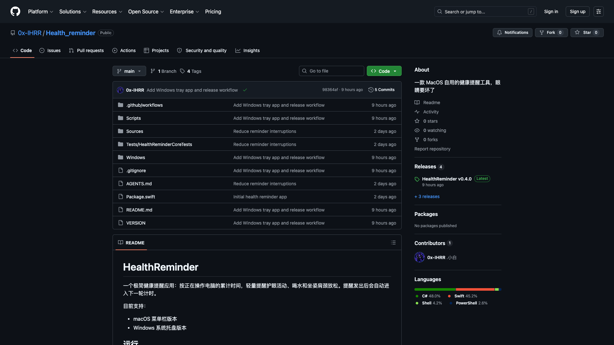
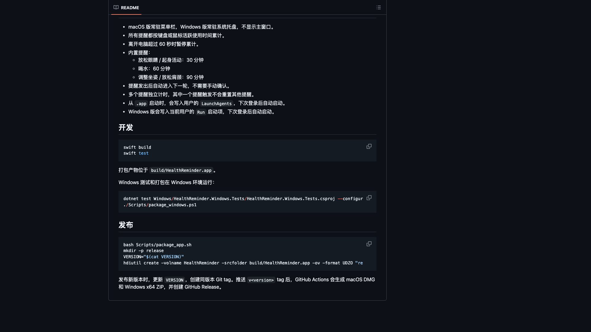

一个常驻菜单栏和系统托盘的健康提醒工具，按实际活跃使用时间提醒护眼、喝水和调整坐姿。

键盘和鼠标在用，才进入计时。离开电脑超过 60 秒，累计自动暂停。
它不是强提醒，也不是习惯打卡。它只在电脑真的被使用时，轻量提醒你停一下。
其中一个提醒触发，不会重置其他提醒。休息、喝水、坐姿各走各的时间。
下载最新 DMG，把 HealthReminder.app 放进 /Applications，首次启动允许通知权限。
bash Scripts/package_app.sh
open build/HealthReminder.app
下载 HealthReminder-<version>-win-x64.zip，解压后运行 exe。自包含包，不需要额外安装 .NET。
HealthReminder.exe
托盘菜单可关闭开机自启
swift build
swift test
dotnet test Windows/HealthReminder.Windows.Tests/HealthReminder.Windows.Tests.csproj --configuration Release
